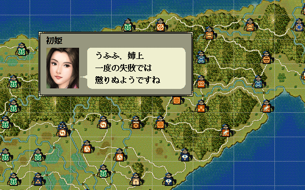
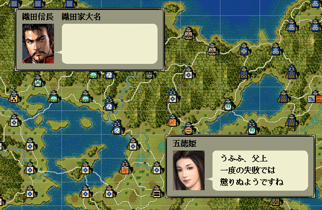

語句変化とは、不定な人物同士の会話メッセージを作成する際に、
「自分・相手」の呼称や、語尾変化等をサポートするAPIです。
後述のソース中の、第１人称武将番号, 第２人称武将番号 を、様々な武将で試し、
一体どのような概念なのか理解して使いましょう。
男性・女性、上司・部下、年寄と若君主、様々な職業など、考慮されたメッセージへと語句が変化します。
武将や姫の会話がある独自イベントの際のメッセージ構築に利用することがほとんどでしょう。
基本的には、(独り言も含めて）相手が存在するという前提での会話に利用されることでしょう。

メッセージは、「相手との関係」「本人の性格」「性別」などによって変化するハズです。
同じメッセージ内容でも、２人の人物関係によって以下のような変化が要求されます。
------------------------------ // 武田晴信 が 武田信繁に言った 信繁、商人に 米を売ろう ははは、信繁 一度の失敗では 懲りぬようじゃな おのれ、信繁 覚えておれ！ ------------------------------ // 武田信繁 が 武田晴信に言った 兄上、商人に 米を売りましょう ははは、兄上 一度の失敗では 懲りぬようですな おのれ、信玄 覚えておれ！ ------------------------------ // 柿崎景家 が 上杉謙信に言った 政虎様、商人に 米を売りましょう わはは、お館様 一度の失敗では 懲りぬようですな おのれ、くそ坊主 覚えておれ！ ------------------------------ // 五徳姫 が 織田信長に言った 父上、商人に 米を売りましょう うふふ、父上 一度の失敗では 懲りぬようですね おのれ、信長 覚えておれ！ ------------------------------ // 初姫 が 茶々姫 姉上、商人に 米を売りましょう うふふ、姉上 一度の失敗では 懲りぬようですね おのれ、茶々 覚えておれ！ ------------------------------
これをif文でかき分けるのは非常に大変です。
２人が誰なのかが特定されていなければ、「人物関係」「年齢」「性格」「口調」などまで考慮すると不可能なのではないかといったほどのif文が必要であり、
仮に２人の人物が固定されていたとしても、「現在家臣なのか？ 大名なのか、上下関係は？」などと考えると、尊敬語に変化するかどうかなど、
考えることが多くあります。
メタ語句を上手く利用して、文章を作りましょう。
どのようなメタ語句があるかは「言葉遣い情報型.h」にあります。
先程の例ですと、たった１通りのメタ文章で実現できます。
void 語句変化の実験(int 自分のBushouID, int 相手のBushouID) {
if (0 <= 自分のBushouID && 自分のBushouID < 最大数::武将情報::配列数 && 0 <= 相手のBushouID && 相手のBushouID < 最大数::武将情報::配列数) {
string message1 = ％相手％(自分のBushouID, 相手のBushouID) + "、商人に\x0A"
"米を売" + ％りましょう％(自分のBushouID, 相手のBushouID);
string message2 = ％ははは％(自分のBushouID, 相手のBushouID) + "、" + ％相手％(自分のBushouID, 相手のBushouID) + "\x0A"
"一度の失敗では\x0A"
"懲りぬよう" + ％です％(自分のBushouID, 相手のBushouID) + ％な（２）％(自分のBushouID, 相手のBushouID);
string message3 = "おのれ、" + ％罵倒相手％(自分のBushouID, 相手のBushouID) + "\x0A"
"覚えておれ！";
デバッグ出力 << message1 << endl;
デバッグ出力 << endl;
デバッグ出力 << message2 << endl;
デバッグ出力 << endl;
デバッグ出力 << message3 << endl;
デバッグ出力 << "------------------------------" << endl;
}
}
void カスタム::On_プレイヤ担当ターン《メイン画面》() {
int i1stBushouID = Get_武将番号【配列用】(顔番号::武田晴信); // 武田信玄
int i2ndBushouID = Get_武将番号【配列用】(顔番号::武田信繁); // 武田信繁
語句変化の実験(i1stBushouID, i2ndBushouID);
i1stBushouID = Get_武将番号【配列用】(顔番号::武田信繁); // 武田信繁
i2ndBushouID = Get_武将番号【配列用】(顔番号::武田晴信); // 武田信玄
語句変化の実験(i1stBushouID, i2ndBushouID);
i1stBushouID = Get_武将番号【配列用】(顔番号::柿崎景家); // 柿崎景家
i2ndBushouID = Get_武将番号【配列用】(顔番号::長尾景虎); // 上杉謙信
語句変化の実験(i1stBushouID, i2ndBushouID);
i1stBushouID = Get_武将番号【配列用】(顔番号::織田五徳); // 五徳姫
i2ndBushouID = Get_武将番号【配列用】(顔番号::織田信長); // 織田信長
語句変化の実験(i1stBushouID, i2ndBushouID);
i1stBushouID = Get_武将番号【配列用】(顔番号::浅井初); // 初姫
i2ndBushouID = Get_武将番号【配列用】(顔番号::浅井茶々); // 茶々姫
語句変化の実験(i1stBushouID, i2ndBushouID);
}
主体と客体の武将番号【配列用】を入れ替えながら会話していけば、
自然な語句変化をしながら、互いの会話を成立させることができます。
void カスタム::On_プレイヤ担当ターン《メイン画面》() {
int 自分のBushouID = Get_武将番号【配列用】(顔番号::織田信長);
int 相手のBushouID = Get_武将番号【配列用】(顔番号::織田五徳);
if (0 <= 自分のBushouID && 自分のBushouID < 最大数::武将情報::配列数 && 0 <= 相手のBushouID && 相手のBushouID < 最大数::武将情報::配列数) {
string message1 = ％相手％(自分のBushouID, 相手のBushouID) + "、商人に\x0A"
"米を売" + ％りましょう％(自分のBushouID, 相手のBushouID);
噴出ダイアログ《通常・左上》開始(自分のBushouID, message1);
// 主格と客体を入れ替え得る
自分のBushouID = Get_武将番号【配列用】(顔番号::織田五徳);
相手のBushouID = Get_武将番号【配列用】(顔番号::織田信長);
string message2 = ％ははは％(自分のBushouID, 相手のBushouID) + "、" + ％相手％(自分のBushouID, 相手のBushouID) + "\x0A"
"一度の失敗では\x0A"
"懲りぬよう" + ％です％(自分のBushouID, 相手のBushouID) + ％な（２）％(自分のBushouID, 相手のBushouID);
噴出ダイアログ《通常・右下》開始(自分のBushouID, message2);
噴出ダイアログ《通常・右下》終了();
噴出ダイアログ《通常・左上》終了();
}
}

独り言の場合は、第１引数と第２引数に両方に当人の「武将番号【配列用】」を入れる。
自分を相手に語りかければ、独り言に近い状態となります。
「語句変化」に関する主な所は以上となります。 詳しくは「言葉遣い情報型.h」などを参照してください。